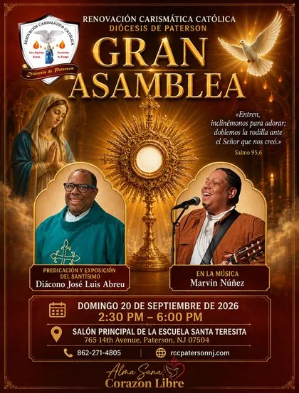

Alma Sana, Corazón Libre
Domingo 20 de septiembre de 2026 · 2:30 pm – 6:00 pm · Salón Principal, Escuela Santa Teresita, Paterson, NJ

Toca el flyer para verlo completo
Domingo 20 de septiembre de 2026
2:30 pm – 6:00 pm
Diácono José Luis Abreu
Marvin Núñez
La Gran Asamblea Diocesana reúne a toda la Renovación Carismática Católica de la Diócesis de Paterson en un mismo lugar: un domingo de predicación, adoración y Exposición del Santísimo, bajo el tema "Alma Sana, Corazón Libre". Se celebrará el domingo 20 de septiembre de 2026, de 2:30 pm a 6:00 pm, en el Salón Principal de la Escuela Santa Teresita, en Paterson, NJ.
"Entren, inclinémonos para adorar; doblemos la rodilla ante el Señor que nos creó." — Salmo 95,6
Predicación y Exposición del Santísimo
En la Música
El domingo 20 de septiembre de 2026, de 2:30 pm a 6:00 pm.
En el Salón Principal de la Escuela Santa Teresita, 765 14th Avenue, Paterson, NJ 07504.
El Diácono José Luis Abreu, quien dirigirá la predicación y la Exposición del Santísimo. En la música participa Marvin Núñez.
Puedes llamar al 862-271-4805.
{kind=link}
{kind=link}
{kind=link}